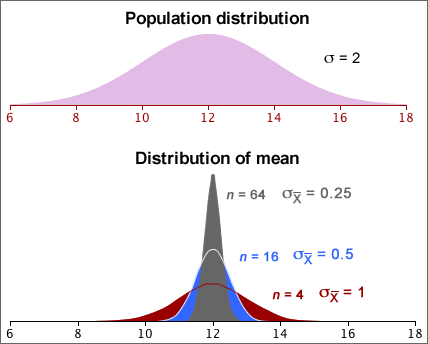
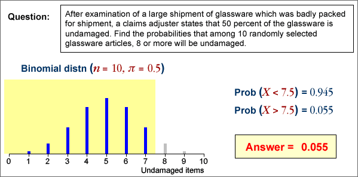
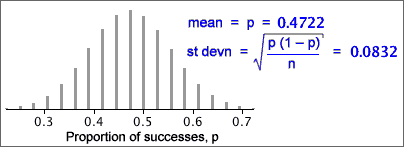

If you don't want to print now,
Shape of a probability density function
A probability density function is usually a fairly smooth curve, though a single sample histogram provides limited information about its likely shape.
Normal distributions
One flexible group of continuous probability density functions is the family of normal distributions. Normal distributions:
Changing the parameters µ and σ changes where the distribution is centred and its spread, but its shape remains otherwise the same.
The parameters are often estimated from a sample. Details will be given later, but the resulting normal pdf will be close in shape to a histogram of the sample data.

Shape of the mean's distribution
Whatever the shape of the population distribution,
 = μ
= μ  =
= 
However skewness in the population distribution leads to some skewness in the distribution of the mean.
Samples from normal populations
When the population distribution is normal, the sample mean also has a normal distribution.
 ~ normal (μ ,
~ normal (μ ,  )
)

Means from non-normal populations
Irrespective of the shape of the population distribution,
 = μ
= μ  =
= 
If the population is not a normal distribution, the sample mean does not have a normal distribution. However the Central Limit Theorem states that...
For most non-normal population distributions, the distribution of the sample mean becomes close to normal when the sample size increases.

Need for multiple values to assess variability
We usually need to make two or more measurements of a variable to get any information about its variability. A single value contains no information about the quantity's variability.
Achieving the impossible?
Fortunately, we do not need multiple sample means to assess the variability of a sample mean. Its distribution can be estimated from a single sample using
 = μ
= μ
 =
= 
The distribution of the mean can be approximated with a normal distribution with this mean and standard deviation, if we replace µ
and σ with  and s.
and s.

Independent random samples
The formula for the standard deviation of a sample mean,
 =
= 
is only accurate if the sample values are independent.
Dependent random samples
When sample values are correlated with each other, they are said to be dependent and the formula

can badly underestimate the variability (and hence accuracy) of the sample mean of dependent random samples.
Always check that a random sample is independently selected from the whole population before using the formula for the standard deviation of the sample mean.
Do the data come from a normal distribution?
A histogram may indicate that a sample is unlikely to come from a normal distribution, but a normal probability plot can indicate more subtle departures from a normal distribution.
If the data set is from a normal distribution, the data should be spaced out in a similar way to the normal quantiles, so the crosses in the normal probability plot should lie close to a straight line.

How much curvature is needed to suggest non-normality?
This is a difficult question to answer and we will not address it here.
It is important to distinguish two types of numerical data.
Dot plots for counts
Dot plots can be used to display count data. However since discrete values are often repeated several times in a data set, the crosses need to be jittered or, preferably, stacked.

If there is a stack for each integer value, the stacked dot plot is a complete representation of the data.
Displaying moderate or large counts
For discrete data sets whose values are large counts, a histogram can be used to give a 'smooth' summary of the shape of the distribution of values.
If the counts are a bit smaller, the exact definition of the histogram classes becomes important. The class boundaries should end in '.5' to ensure that data values do not occur on the boundary of two classes.

Displaying small counts
When the range of values in a discrete data set is small, a histogram can be drawn with class width 1 (and with class boundaries ending in '.5'). These classes are centred on 1, 2, 3, etc.
This can be improved by narrowing the histogram rectangles into bars to emphasise the discrete nature of the data. This is called a bar chart.

Estimating means and proportions
A random sample is often used to estimate some numerical characteristic of the population, such as...
The difference between an estimate and the population value being estimated is called its sampling error.

A sample proportion has a distribution
If a categorical data set is modelled as a random sample from a categorical population, the sample proportions must be treated as random quantities — they vary from sample to sample.

The population proportion in a category is called its probability, and is often denoted by π. The corresponding sample proportion is usually denoted by p.
| Sample Statistic | Population Parameter | |
|---|---|---|
| Mean | µ | |
| Standard deviation | s | σ |
| Proportion/probability | p | π |
In practice, we only have a single sample and must use it to get information about the underlying population.

Properties of a sample proportion
A sample proportion from a random sample of size n has a distribution that ...
Count and proportion of successes
Although the sample proportion in a category, p , is a good summary statistic, the raw count of sample values in the category, x = np, contains equivalent information and is often easier to use. They have distributions with the same shape (other than the scaling constant n).

General notation
In a categorical population, we choose one category of interest and call it success; all other categories are collectively called failures. The population proportion of successes is denoted by π.
When a random sample of n values is selected, we denote the number of successes by x and the proportion of successes by p = x/n.
Distribution of a sample proportion
The number of successes, x , has a 'standard' discrete distribution called a binomial distribution which has two parameters, n and π.
In practical applications, n is a known constant, but π may be unknown. The sample proportion, p , has a distribution with the same shape, but is scaled by n .

Assumptions underlying the binomial distribution
Evaluating binomial probabilities
They may be obtained using ...
A range of counts
Finding the probability that the number of successes is within an interval involves adding the binomial probabilities for all integer values in the interval.
Think carefully about the wording of the interval — does it include the values at the end? Adding or subtracting 1/2 to the endpoints of the interval makes it clearer. (This is also particularly useful when using the normal approximations that are described in the following pages.)
| In words... | In terms of X | Using 1/2 |
|---|---|---|
| More than 5 | X > 5 | X > 5.5 |
| Greater than or equal to 5 | X ≥ 5 | X > 4.5 |
| No more than 5 | X ≤ 5 | X < 5.5 |
| At least 5 | X ≥ 5 | X > 4.5 |
| Fewer than 5 | X < 5 | X < 4.5 |
| 5 or fewer | X ≤ 5 | X < 5.5 |
The following example illustrates the use of 1/2 in this way.

Mean and standard deviation of x and p
The mean and standard deviation are given below for the proportion of successes p , and number of successes, x = np

The fact that both x and p are approximately normally distributed in large samples is justified below.
Proportions and means
If we assign a code of '1' to the successes and '0' to the failures in the random sample, then the resulting values are called an indicator variable. Its mean is identical to the proportion of successes.

Since the proportion of successes in a sample is a kind of mean, its distribution is close to a normal distribution if the sample size is large enough.

Use of the normal approximation to the binomial distribution
To avoid adding large numbers of binomial probabilities, the normal approximation can be used to find the probability that a binomial variable is within a certain range when the sample size, n , is large.
A common rule-of-thumb for when this kind of normal approximation can be used is:
nπ > 5 and n(1-π) > 5
An example is given below:

Note the translation of the range of values into one involving 1/2. It is called a continuity correction in this context.
General framework
A similar approach to that for estimating a population mean is used for estimating population proportions and other parameters.
estimate - 2 s.e. to estimate + 2 s.e.
Population proportions and probabilities
Categorical data are usually treated as a random sample from some population. We concentrate on a single category which we will call success and we collectively call the other categories failures. The population proportion of successes is denoted by π. It is also the probability that a single randomly selected value from the population is a success.
We are interested in estimating an underlying probability, π. Although it is more general to treat π as a probability, it is usually easier to interpret π as a 'population proportion'.
Parameter estimate and error
The sample proportion of successes is denoted by p and is an estimate of π.

Since p is based on a random sample, it varies from sample to sample and has a distribution. The estimation error is:
error = p - π
Since π is unknown, we never know the value of the error, but we can find its approximate distribution. This will allow us to assess the likely size of the error.
Distribution of proportion
The proportion of successes from a random sample with probability π of success, p , has a distribution with mean and standard deviation
μp = π
σp = 
Distribution of estimation error
The estimation error is p - π and its distribution has the same shape as that of p, but is shifted to have mean zero. The bias and standard error are therefore
bias = μerror = 0
standard error = σerror = 
Standard error from data
Unfortunately, the formula for the standard error of p involves π, and this is unknown in practical problems. To get a numerical value for the standard error, we therefore replace π with our best estimate of its value, p .
bias = μerror = 0
standard error = σerror = 
Example
In a random sample of n = 36 values, there were x = 17 successes. Our best estimate of π is the sample proportion, p = 17/36. Using this estimate, the distribution of the number of successes in similar samples would be
X ~ binomial (n = 36, π = 17/36)

The proportion of successes in similar samples would have a scaled form of this distribution

and the error distribution would shift this to have mean zero:

From this error distribution, it is unlikely that our estimate of the proportion of successes (17/36) would be in error by more than 0.2.
Normal approximation to the error distribution
If the sample size, n, is large enough, the binomial distribution is approximately normal, so we have the approximation
error = p − π ~ normal (0,  )
)
Example
The error distribution (and standard error) give a good indication of how far our point estimate (0.554) will be from the true proportion of adults in the park.
95% bounds on the estimation error
When sample proportion p is used to estimate a corresponding population proportion, π, the resulting error has the approximate distribution,
error = p − π ~ normal (0,  )
)
Replacing π by our best estimate, p , and using the properties of the normal distribution,
Prob( error is between ± 2 ) ≈ 0.95
) ≈ 0.95
95% confidence interval
A 95% confidence interval for π is therefore...

Example
In a random sample of n = 36 values, there were x = 17 successes. We estimate the population proportion, π, with p = 17/36 = 0.472. The approximate normal distribution for the errors is shown below.

A 95% confidence interval for π is therefore
0.472 ± 0.166
i.e. 0.306 to 0.638
We are therefore 95% confident that the population proportion of successes is between 30.6% and 63.8%. A sample size of n = 36 is clearly too small to give a very accurate estimate.
Properties
As with all other confidence intervals, a 95% confidence interval for a population proportion, π, is random. Although it correctly includes π in 95% of random samples, there is a 5% probability that it will not include the true value of π.
The simulation below took 100 random samples of size n = 200 from a population with π = 0.6. Most of the confidence intervals included π = 0.6, but some did not. If the simulation was repeated many more times, the proportion including 0.6 would be close to 0.95.

In practice, you only have a single sample and a single confidence interval, but we have "95% confidence" that it will include the true (and usually unknown) value of π.
Problems with small sample sizes
This confidence interval for π was based on a normal approximation to the distribution of the sample proportion. If the sample size, n, is small or π is close to either 0 or 1, this normal approximation is inaccurate and the confidence level for the interval can be considerably less than 95%.
Many textbooks give the following guideline for using the confidence interval:
Only use the confidence interval for π when all of
the following hold...
|
These guidelines can be relaxed a little provided you accept that the confidence level may be a little less than 95%.
Interpretation of a confidence interval
We never know in practice whether or not the confidence interval that we obtain actually includes π.
Being right most of the time is the best one can hope for, since there is always the possibility of being misled by an unlucky sample.
The method that we use to obtain the confidence interval has probability 0.95 of including π. We cannot tell whether the single interval that we evaluate from our data set is one of these 'lucky' intervals, but knowing that the method works so often gives us 95% confidence in this interval.
Example

Standard errors and CIs from formulae
If a formula can be found for the standard error of an estimator, an approximate 95% confidence interval can be found from
estimate - 2 s.e. to estimate + 2 s.e.
For some estimators, there is no formula for the standard error, so a different approach is needed.
Rainfall example
Understanding of the distribution of rainfall lets farmers make better choices about the crops that are grown and when they are planted, especially in areas prone to drought. A useful summary is the upper quartile of the rainfall distribution in a month — the rainfall that is exceeded in only 1 out of 4 years.
The diagram below shows October rainfall in Samaru, Nigeria for the 56 years between 1928 and 1983.

Assuming that there is no climate change, the sample upper quartile is our best point estimate of the upper quartile for the underlying population distribution, but there is no convenient formulae for its standard error.
Standard error of a proportion
If statistical theory does not provide the error distribution for the estimator of interest, a simulation can often be used to find properties of the error distribution numerically.
This methodology is illustrated with a simulation to find the standard error of a sample proportion. Since we already have a formula,
standard error = 
a simulation is unnecessary, but it allows us to simply illustrate the method.
Example
A sample of n = 36 values are selected from a population with probability π of success, so the number of successes will have a binomial distribution,
X ~ binomial (n = 36, π)
If we knew the value of π, we could take repeated samples from this binomial distribution, find the estimation error, (p - π) for each sample, and build up the error distribution.
If x = 17 successes are observed, our best estimate of π is p = 17/36 = 0.472, so we could perform this simulation using p instead of π.

This simulation of 100 samples provides approximations to the bias (-0.004) and standard error (0.080) for this type of estimator. These are fairly close to the values from the formulae,
bias = 0
standard error =  = 0.0832
= 0.0832
In practice, the formula would be used for the standard error of a proportion, but we can use simulations for other examples where a formula does not exist.
Normal distribution parameters
The mean, µ, of normal populations is usually of most interest, but we may also want to estimate:
The corresponding sample statistics provide point estimates of these parameters, but formulae for standard errors may be difficult to find.
Simulation
If the values of µ and σ were known, we could perform a simulation with repeated samples to find the error distribution for the type of estimate that we were using. The standard deviation of the error distribution gives the standard error of the estimate.
In practice, µ and σ are unknown, but we can perform a similar simulation, replacing them with the sample mean and standard deviation.
Example
Low assets-to-liabilities ratios are usually regarded as undesirable for companies. We want to find the assets-to-liabilities ratio that only one in four healthy companies will not meet — i.e the lower quartile of the distribution. The diagram below shows the assets-to-liabilities ratios of a sample of 68 healthy Greek companies and the point estimate of the lower quartile.

The assets-to-liabilities ratios have a fairly symmetric distribution and the diagram below shows a normal distribution whose mean and standard deviation are the same as those of our actual data.

This approximate normal distribution has lower quartile 1.295, so we can perform a simulation with samples of n = 68 values from this distribution and find how far the sample lower quartiles are from this theoretical value — the error distribution.

From the 70-95-100 rule-of-thumb, the error has approximately 95% chance of being within 2 s.e. of zero and will be almost certainly within 3 s.e. of zero. This means that our point estimate of the upper quartile (292 secs) is likely to be less than 9 sec from the underlying population parameter and will be almost certain to be less than 13.5 sec from it.
Bootstrap simulation
The simulations can be based on random samples from any approximation to the population distribution. If a normal approximation does not seem reasonable, the actual data can be used as an approximate 'population' and random samples selected with replacement from it. Such samples are called bootstrap samples.
A simulation with these bootstrap samples can again show the error distribution and provide approximate values for the bias and standard error.
Example
The October rainfall data below is highly skew, so a normal approximation should not be used to generate simulated samples.
A typical bootstrap sample is shown below:

The diagram below shows the 'errors' from 100 of these simulated bootstrap samples — the differences between the sample upper quartiles and that from the 'population' underlying the simulation, 57.4.

Using the 70-95-100 rule-of-thumb, our point estimate of the upper quartile, 57.4, is unlikely to be in error by more than about 20.